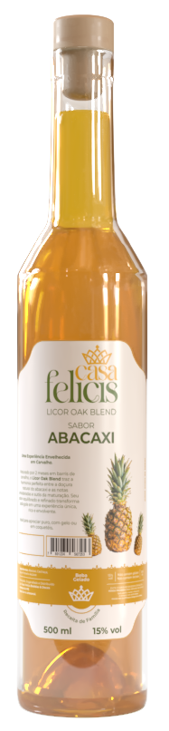

O encontro inusitado entre o frescor ácido do abacaxi e a nobreza do carvalho.

Nossa jornada começa com a seleção dos abacaxis no ponto exato de maturação, onde a doçura natural atinge seu ápice. Diferente de licores comuns, o Oak Blend Tropical passa por um processo inspirado na tanoaria clássica. A infusão descansa em contato com madeiras nobres, o que confere à bebida uma cor dourada profunda e notas de baunilha e especiarias que dançam com a acidez da fruta.
Frutado intenso com fundo amadeirado sutil.
Início doce e cítrico, evoluindo para um final seco e elegante.
Queijos curados, carne suína e sobremesas de coco.
O drink assinatura que celebra o verão o ano todo. Simples, sofisticado e refrescante.
Preparo: Misture os ingredientes em um copo baixo com gelo. Mexa suavemente para gelar e finalize com o óleo da casca de laranja.
"Um brinde à
alma solar."